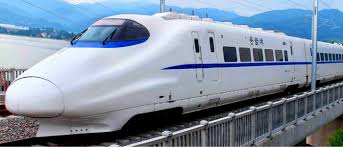

TransTrain is more than just any transport service

TransTrain is the first ever disability friendly transport service in the world.
It was first mention during a training session with Aladyis Foundation on
Business Model Canvas.
This project was greatly supported by the YoLe fellows of 2020.
Currently we have received a lot of letter for Patnership which some organizations
such as UNFPA,UNDP,Total,CocaCola,The Ra-Chel. Corporation and the World Bank Group.
You can also be a part of this wonderful experience
Make a phone to TransTrain and enjoy a wonderful customer service
from our trained and professional staff.